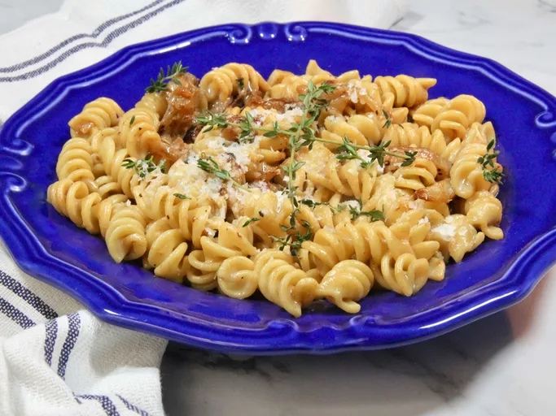

Fill a large pot with lightly salted water and bring to a rolling boil. Stir in pasta and return to a boil. Cook pasta uncovered, stirring occasionally, until tender yet firm to the bite, about 10 minutes, or according to package directions.
Meanwhile, add butter and oil to a deep skillet over high heat. Add onions, and cook and stir until they take on a little color. Add sugar, salt, pepper, vinegar, and water, and continue to cook on high heat, stirring constantly, until onions are very tender and dark brown, about 15 minutes.
Turn heat down to low; add milk, garlic, thyme, and grated Parmesan. Blend the sauce until smooth with an immersion blender.
Drain pasta, reserving a small amount of water to thin sauce if needed. Stir pasta into sauce.
